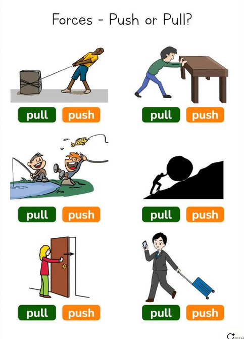
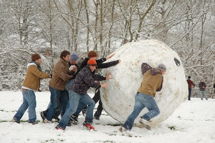
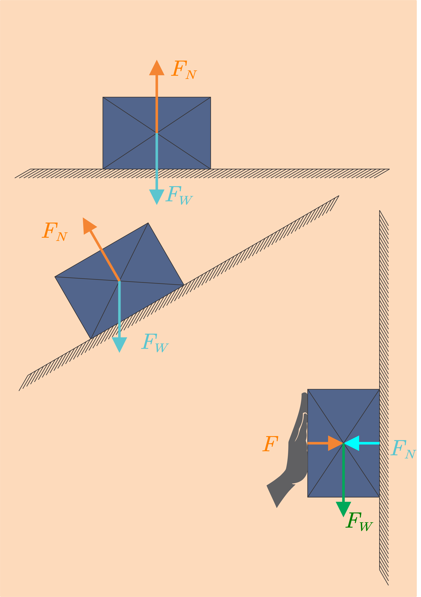
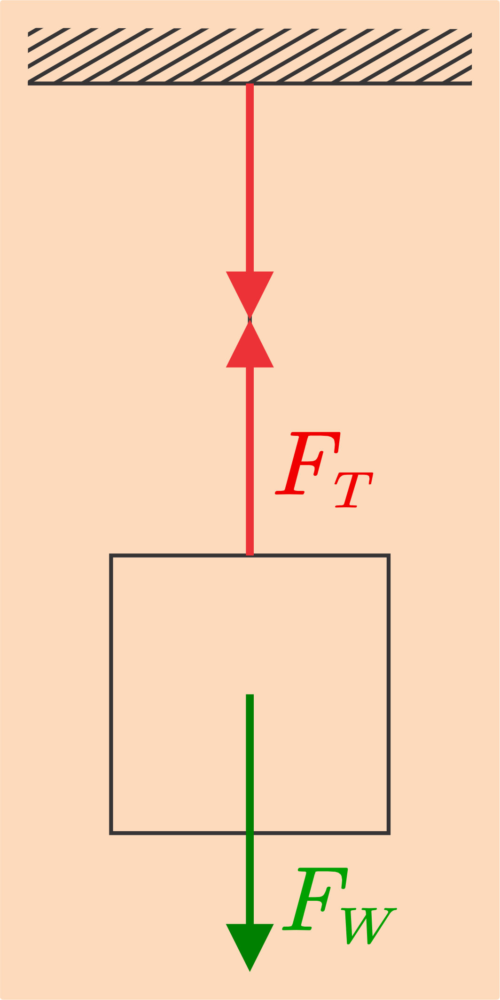

# Dinamika Gerak - Hukum Newton tentang Gerak - Jenis-jenis Gaya --- ## Hukum Newton tentang Gerak - Dinamika adalah cabang fisika yang membahas gerak dengan memperhitungkan penyebab gerak tersebut. - Apakah penyebab gerak? Gerak disebabkan karena ada gaya yang bekerja pada benda tersebut. --- ### Hukum I Newton - Jauh sebelum Newton merumuskan hukum-hukumnya tentang gerak, Aristoteles menyatakan bahwa kecenderungan alamiah setiap benda adalah diam. - Ketika ada gaya yang bekerja padanya, benda itu akan bergerak, tetapi ketika tidak ada gaya benda itu akan berhenti. --- - Newton merevisi pandangan ini, yang lalu akan kita kenal dengan hukum I Newton tentang gerak. - Kecenderungan benda bukanlah diam, melainkan meneruskan keadaan gerak (*state of motion*) saat itu. - Newton merumuskan hukumnya tentang gerak yang pertama (Hukum Inersia/Kelembaman) sebagai berikut: --- >Benda yang diam akan cenderung tetap diam dan benda yang bergerak akan cenderung bergerak dengan kecepatan tetap selama resultan gaya yang bekerja padanya nol. - Secara matematis, hukum ini dinyatakan dengan: ###### $$\Sigma F=0$$ Keterangan: - *ΣF* = Resultan gaya (newton atau N) --- ### Hukum II Newton - Untuk membuat benda diam menjadi bergerak, diperlukan gaya. Tetapi tidak hanya itu, untuk membuat benda bergerak menjadi diam, juga diperlukan gaya. - Gaya mengubah kecepatan benda. Dan, kecepatan adalah besaran vektor. Artinya, yang berubah tidak hanya besarnya, tetapi dapat juga arahnya. - Gaya dapat berupa *dorongan atau tarikan terhadap sebuah benda*. --- <div class="r-hstack justify-center"> <div class="tooltip" data-id="box1" style="background: #999; width: 10px; height:600px; margin: 10px; border-radius: 5px;"></div> <div class="tooltip" data-id="box2" style="background: #999; width: 500px; margin: 10px; border-radius: 5px;"></div> <div class="tooltip" data-id="box3" style="background: #999; width: 10px; height:600px; margin: 10px; border-radius: 5px;"></div> --- <div class="r-hstack justify-center"> <div class="tooltip" data-id="box1" style="background: #999; width: 500px; margin: 10px; border-radius: 5px;"><span class="tooltiptext-b-3">Gaya diperlukan untuk membuat benda diam menjadi bergerak</span></div> <div class="tooltip" data-id="box2" style="background: #999; width: 500px; margin: 10px; border-radius: 5px;"><span class="tooltiptext-b-3">Gaya diperlukan untuk membuat benda bergerak menjadi diam</span></div> <div class="tooltip" data-id="box3" style="background: #999; width: 500px; margin: 10px; border-radius: 5px;"><span class="tooltiptext-b-3">Gaya diperlukan untuk membuat arah gerak benda berubah</span></div> </div> --- - Karena gaya mengubah kecepatan benda, pasti ada hubungan antara gaya dengan perubahan kecepatan itu. - Newton merumuskan ini dalam hukumnya tentang gerak yang kedua: >Percepatan sebuah benda berbanding lurus dengan resultan gaya yang bekerja padanya dan berbanding terbalik dengan massa benda. Arah percepatan sama dengan arah resultan gaya. --- - Secara matematis, hukum itu dinyatakan sebagai berikut: ###### $$\Sigma F=ma$$ Keterangan: - *ΣF* = Resultan gaya (newton atau N) - *m* = massa (kg) - *a* = percepatan (m/s<sup>2</sup>) --- - Hukum ini mau mengatakan bahwa percepatan atau perubahan kecepatan benda sebanding dengan besar gaya yang dikerjakan pada benda itu. - Selain itu, massa juga dapat berpengaruh. Dalam pembahasan kita selama ini, massa benda cenderung tetap. Tetapi, dalam kenyataan tidak demikian. - Massa, selain merupakan ukuran kuantitas materi suatu benda juga merupakan ukuran kelembamannya. --- ### Hukum III Newton - Hukum III Newton tentang gerak menyatakan sesuatu yang penting, yakni bahwa gaya selalu berpasangan. - Jika ada gaya yang bekerja pada benda A, pasti ada benda lain, katakanlah B, yang mengerjakan gaya itu. Dan, gaya itu sama besarnya, hanya arahnya berlawanan. Maka, Hukum III Newton tentang gerak berbunyi: --- >Untuk setiap aksi selalu ada reaksi yang sama besar dan berlawanan arah. - Secara matematis, hukum itu dinyatakan sebagai berikut: ###### $$F_{\text{aksi}}=F_{\text{reaksi}}$$ Yang perlu diingat adalah bahwa gaya aksi dan reaksi bekerja pada benda yang *berbeda*, bukan pada satu benda yang sama. Dengan demikian, keduanya tidak saling meniadakan. --- <div class="r-hstack justify-center"> <div class="tooltip" data-id="box1" style="background: #999; width: 500px; margin: 10px; border-radius: 5px;"><span class="tooltiptext-b-3">Hukum I Newton</span></div> <div class="tooltip" data-id="box2" style="background: #999; width: 500px; margin: 10px; border-radius: 5px;"><span class="tooltiptext-b-3">Hukum II Newton</span></div> <div class="tooltip" data-id="box3" style="background: #999; width: 500px; margin: 10px; border-radius: 5px;"><span class="tooltiptext-b-3">Hukum III Newton</span></div> </div> --- ## Jenis-jenis Gaya ##### 1. Gaya Berat - Gaya berat (atau berat saja) adalah gaya gravitasi (bumi) yang bekerja pada sebuah benda. Arahnya tentu saja selalu menuju ke pusat bumi. - Ketika tidak ada gaya lain yang bekerja, sebuah benda yang dijatuhkan dari ketinggian akan mengalami gerak jatuh bebas dengan percepatan sama dengan percepatan gravitasi. - Artinya, hanya gaya beratnya saja yang membuat benda itu bergerak. --- Besar gaya berat (*F<sub>W</sub>* atau *W* saja) adalah $$\Sigma F=ma$$ ###### $$F_W=mg$$ Keterangan: - *F<sub>W</sub>* = Gaya berat (newton atau N) - *m* = massa (kg) - *g* = percepatan gravitasi(m/s<sup>2</sup>) --- Besar percepatan gravitasi di seluruh permukaan bumi tidaklah sama, tergantung jaraknya dari pusat bumi. Tetapi, rata-rata besarnya adalah *9,87 m/s<sup>2</sup>*. Sering kali angka ini dibulatkan menjadi 10 untuk memudahkan perhitungan. --- ##### 2. Gaya Normal - Gaya normal didefinisikan sebagai gaya yang bekerja pada bidang sentuh antara dua permukaan. Bila sebuah benda berada di atas suatu permukaan, permukaan itu akan memberikan gaya yang disebut sebagai gaya normal (*F<sub>N</sub>* atau *N* saja). - Arah gaya normal selalu tegak lurus terhadap permukaan bidang sentuh. - Ketika kita menimbang berat kita di timbangan atau neraca, gaya normal inilah yang dibaca oleh timbangan sebagai berat kita. --- - Mengapa? Karena dalam keadaan diam dan tidak ada gaya lain yang bekerja (serta berada di permukaan datar), berlaku $$\Sigma F=0$$ $$F_W-F_N=0$$ ###### $$F_W=F_N$$ Keterangan: - *F<sub>N</sub>* = Gaya normal (newton atau N) ---  --- ##### 3. Gaya Tegang Tali - Jika dua benda dihubungkan dengan tali dan salah satu benda ditarik/didorong sehingga tali tersebut menegang, di antara kedua benda, timbul gaya tegang tali (*F<sub>T</sub>* atau *T* saja). - Untuk tali yang berbeda, besar tegangan tali belum tentu sama. Tetapi, untuk satu tali yang sama, besar tegangan tali sama. --- <div class="r-hstack justify-center"> <div data-id="box1" style="width: 75%;"></div> <div>Pada gambar di samping, karena benda diam maka berlaku hukum I Newton: $$\Sigma F=0$$ $$F_W-F_T=0$$ <h6> $$F_W=F_T$$</h6> Keterangan: <ul><li><em>F<sub>W</sub></em> = Gaya berat (N)</li> <li><em>F<sub>T</sub></em> = Gaya tegang tali (N)</li></ul></div> </div> --- ##### 4. Gaya Gesek - Gaya gesek termasuk dalam gaya sentuh, yang muncul ketika dua permukaan saling bersentuhan secara fisik. Arahnya sejajar dengan permukaan bidang sentuh dan berlawanan arah dengan kecenderungan gerak benda. - Terdapat dua macam gaya gesek: *gaya gesek statis* dan *gaya gesek kinetis*. --- - Benda yang diam pada sebuah permukaan dan kemudian diberi gaya tidak serta merta bergerak. Ini dikarenakan ada gaya gesek statis yang harus diatasi dulu. - Jadi gaya gesek statis nilainya mulai dari nol hingga nilai maksimal tertentu, tergantung jenis permukaannya. --- - Misalnya, gaya gesek statis benda bermassa 10 kg pada permukaan tanah, bernilai 20 N. Maka ketika kita dorong dengan gaya 5 N, benda belum bergerak karena terdapat gaya gesek yang juga 5 N. Begitu juga ketika kita beri gaya 10 N dan 15 N. - Baru ketika kita memberi gaya 20 N, impas. Gaya yang kita berikan sama dengan gaya gesek yang melawannya. Saat itulah benda mulai bergerak. --- - Saat benda bergerak yang bekerja lalu menjadi gaya gesek kinetis, yang umumnya nilainya sedikit lebih kecil dari gaya gesek statis. Besar gaya gesek tergantung pada koefisien gesek dan gaya normal yang bekerja pada benda. Secara matematis, ###### $$f_s\leq\mu_s N$$ ###### $$f_k=\mu_k N$$ --- Keterangan: - Tanda ≤ menunjukkan bahwa nilai gaya gesek statis berkisar antara 0 hingga nilai maksimal, yakni $\mu s N$ (*$f_{maks}=\mu s N$*). - *f<sub>s</sub>* = Gaya gesek statis (newton atau N) - *f<sub>k</sub>* = Gaya gesek kinetis (newton atau N) - *μ<sub>s</sub>* = koefisien gesek statis yang berbeda-beda untuk setiap permukaan. Besarnya antara 0 dan 1 - *μ<sub>k</sub>* = koefisien gesek kinetis - *N* = Gaya normal (newton atau N) --- ##### 5. Gaya Sentripetal - Dalam pembahasan gerak melingkar, sudah dibahas mengenai percepatan sentripetal, yakni percepatan yang mengarah ke pusat lingkaran atau tegak lurus dengan kecepatannya. - Gaya sentripetal adalah gaya yang menyebabkan percepatan tersebut. Arahnya juga sama dengan arah percepatan sentripetal. Besar gaya sentripetal ini adalah: --- $$F_s=ma_s$$ ###### $$F_s=m\frac{v^2}{r}=m\omega^2r$$ Keterangan: - *F<sub>s</sub>* = Gaya sentripetal(newton atau N) - *a<sub>s</sub>* = Percepatan sentripetal (m/s<sup>2</sup>) - *v* = Kecepatan linear (m/s) - *ω* = Kecepatan Sudut (rad/s) - *r* = Jari-jari (m)